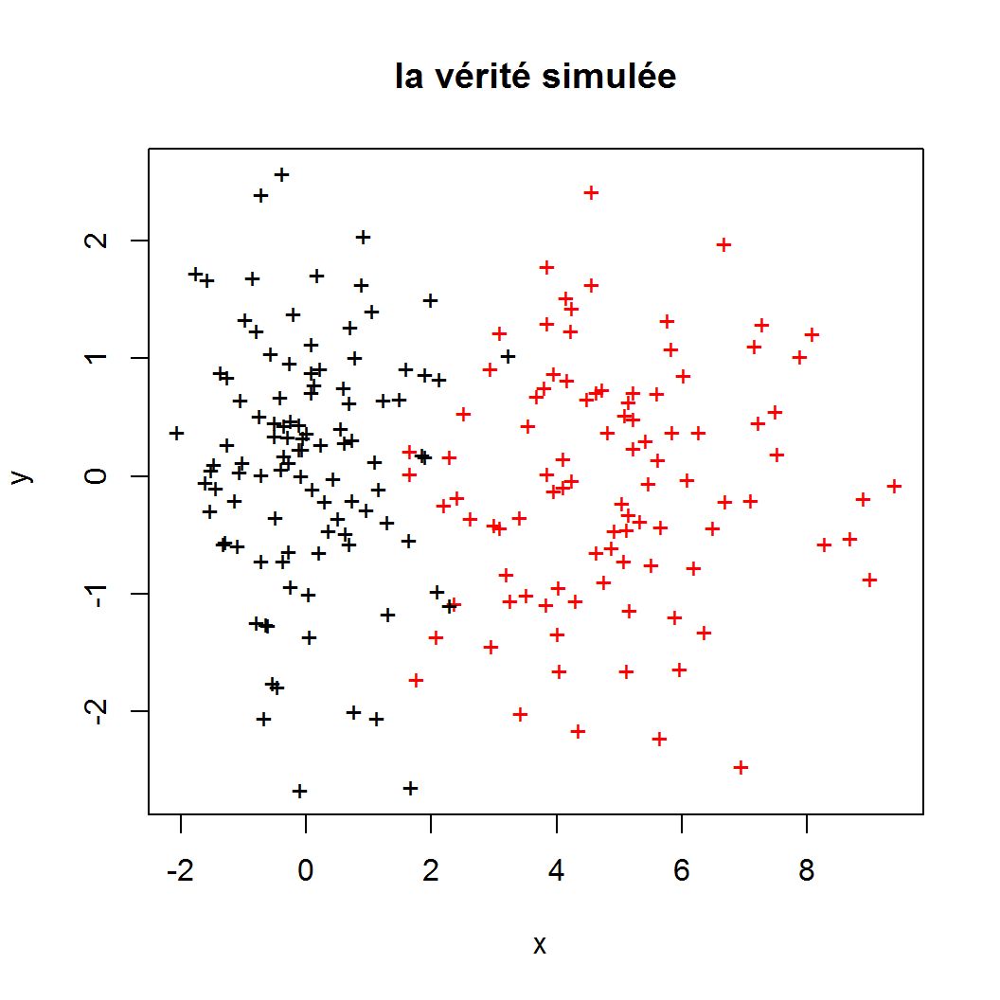
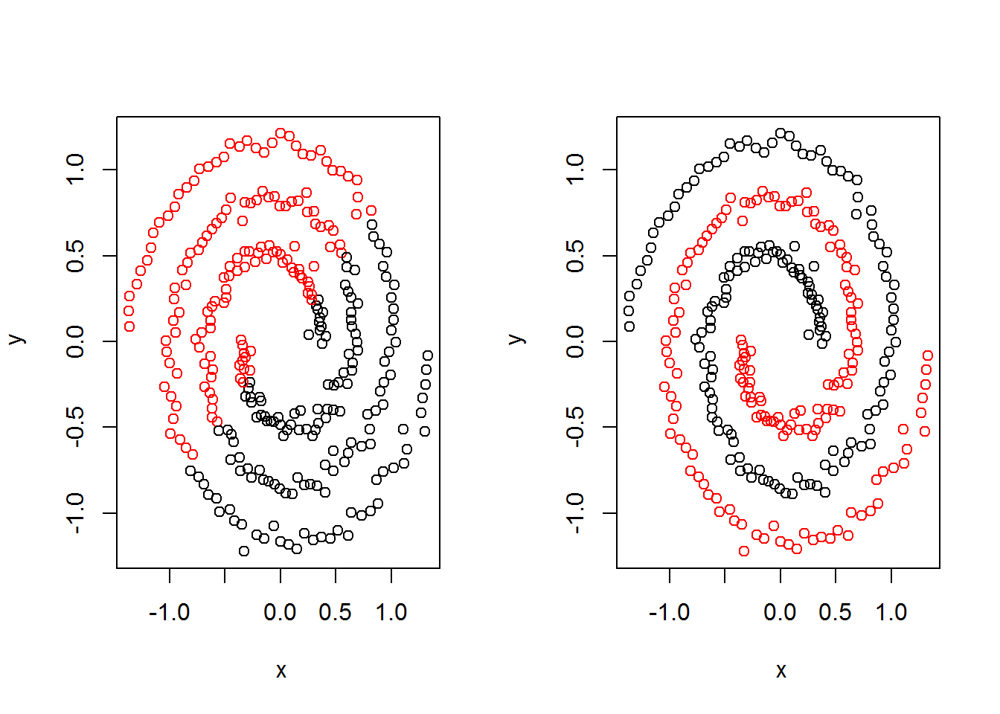

Dans cette partie, nous simulons des impacts de balles provenant de deux tireurs différents. Nous présentons une procédure de détection des impacts de chaque tireurs. Cela revient à mettre une couleur noir ou rouge sur chaque impact où chaque couleur caractérise un tireur. Le bloc de code suivant propose de simuler 200 impacts sur un mur. Ces lignes de code ont été réalisées sous le logiciel libre . Les principaux éléments de ce codes correspondent à
set.seed(123) permet de rendre l’expérience de simulation reproductiblermixture qui simule les impacts de balles où
n est l’agrument qui contrôle le nombre d’impacts à simulerdelta contrôle la différence entre les impacts des deux tireursd.disc est le nombe de dimensions discriminantes (une seule dans notre exemple)d.nondisc est le nombe de dimensions non-discriminantes (une seule dans notre exemple)Dans la suite, nous allons utiliser le terme étiquette pour désigner les couleurs rouge et noir qui permettent de distinguer les impacts d’un tireur de ceux de l’autre. On propose de cacher la vérité qui correspond aux étiquettes rouges et noirs des impacts et nous allons faire appel à une procédure de détection appelée algorithme des k-moyennes.
set.seed(123)
# Fonction de generation des donnees
rmixture <- function(n, delta, d.disc, d.nondisc){
z <- sample(1:2, n, replace = TRUE)
x <- matrix(rnorm(n*(d.disc+d.nondisc)), n)
x[which(z==2), 1:d.disc] <- x[which(z==2), 1:d.disc]*2 + delta
list(x=as.data.frame(x), z=z)
}
ech <- rmixture(n=200, delta=5, d.disc = 1, d.nondisc = 1)
plot(ech$x[,1], ech$x[,2], pch="+", col=ech$z, xlab=~x, ylab=~y, main="la vérité simulée")
L’algorithme des k-moyennes peut être résumé par les 4 étapes suivantes :
On choisit deux points moyens au hasard, un rouge et un noir.
On affecte une étiquette rouges aux points les plus proches du point rouge et une étiquette noir aux points les plus proches du point noir;
On calcule les coordonnées moyennes des points rouges et les coordonnées moyennes des points noirs qui vont jouer le rôle des deux points moyens rouge et noir.
On répete l’etape 2 et 3 jusqu’à ce que les deux points moyens rouge et noir se stabilisent et ne bougent plus.
Le bloc de code suivant permet de mettre en place la procédure des kmoyennes sur les 200 impacts simulés précédemment
par(mfrow=c(1,2))
plot(ech$x[,1], ech$x[,2], pch="+", xlab=~x, ylab=~y, main="étiquettes cachées")
detect <- kmeans(ech$x, 2, nstart = 100)
plot(ech$x[,1], ech$x[,2], pch="+", col = detect$cluster,
xlab=~x, ylab=~y, main="étiquettes attribuées")min(mean(ech$z!=detect$cluster), 1-mean(ech$z!=detect$cluster))## [1] 0.055Comme on peut le constacter, l’affectation des couleurs des étiquettes se fait à une permutation près. L’algorithme des k-moyennes se trompes dans l’étiquetage de \(5.5\%\) des impacts.
On s’intéresse à un autre jeu de données sous forme de deux spirales qu’on cherche à détecter automatiquement.
require(kernlab)## Loading required package: kernlabdata(spirals)
plot(spirals, xlab=~x, ylab=~y, main="deux spirales")Ce jeu de données est intéressant par la forme des deux groupes à détecter. Cette forme spirale des deux groupes met en échec l’algorithme des k-moyennes comme on peut le remarquer sur la figure à gauche ci-dessous. En raison de la forme non-convexe des spirales, l’agorithme des k-moyennes échoue dans la détection des deux groupes.
require(kernlab)
data(spirals)
par(mfrow=c(1,2))
plot(spirals, col = kmeans(spirals, 2)$cluster, xlab=~x, ylab=~y )
plot(spirals, col = specc(spirals, 2), xlab=~x, ylab=~y)
Revenons au premier exemple d’attribution d’étiquettes rouges et noirs aux impacts de tirs, nous avons donné en entrée de l’algorithme des k-moyennes, le nombre de groupes qui correspond au chiffre \(2\) dans l’instruction kmeans(ech$x, 2, nstart = 100). Cette information est inconnu a priori dans une situation réelle. Il serait donc intéressant de mettre une place un mécanisme de choix du nombre de tireurs. Comme on peut le constater sur le même jeu de données, c’est uniquement l’abscisse d’un point qui permet de déterminer l’appartenance à une couleur ou une autre. La question de détection de dimensions discriminante est une question très importance quand il s’agît de classer des données génétiques où une dimension discriminante correspond à une position du génome qui permet de faire un diagnostic. La procédure implémentée dans la librairie de permet de répondre aux deux questions précédentes comme on peut le voir sur le bloc de code suivant. Ce libraire est le résultat des travaux des trois dernières années de recherche de mon tuteur en collaboration étroite avec son coauteur enseignant-chercheur à l’ENSAI à Rennes.
require(VarSelLCM)## Loading required package: VarSelLCM##
## Attaching package: 'VarSelLCM'## The following object is masked from 'package:kernlab':
##
## predict## The following object is masked from 'package:stats':
##
## predictres_with <- VarSelCluster(ech$x, gvals=1:6, nbcores = 8, crit.varsel = "BIC")
print(res_with)## Data set:
## Number of individuals: 200
## Number of continuous variables: 2
##
## Model:
## Number of components: 2
## Model selection has been performed according to the BIC criterion
## Variable selection has been performed, 1 ( 50 % ) of the variables are relevant for clustering
##
## Information Criteria:
## loglike: -745.3824
## AIC: -752.3824
## BIC: -763.9265
## ICL: -781.7757min(mean(ech$z!=res_with@partitions@zMAP), 1-mean(ech$z!=res_with@partitions@zMAP))## [1] 0.065On reprend l’exemple d’impacts de balles sur un mur avec un nouvel algorithme. L’argument gvals=1:6 de la fonction VarSelCluster permet de tester les nombre de groupes (nombre de tireurs dans cet exemple) allant de 1 à 8. La commande nbcores = 8 permet de faire appel aux 8 coeurs du processeur pour faire le calcul en un temps plus court. Il a detecté la présence de deux tireurs, il y’a une des deux dimensions qui est inutile pour détecter le nombre de tireurs et le taux d’erreur est de 6.5%.